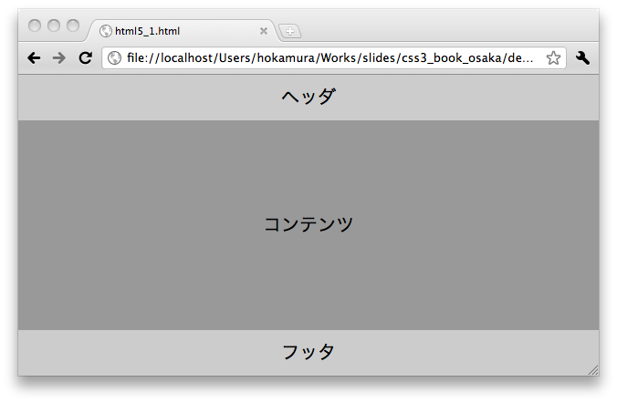
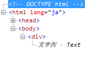
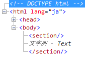
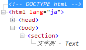
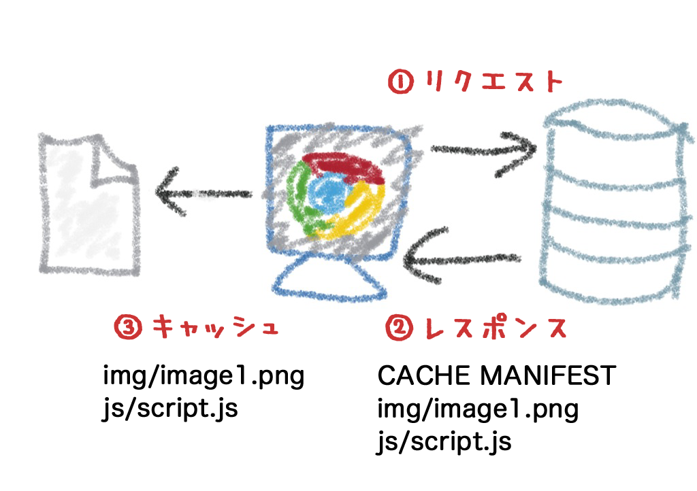
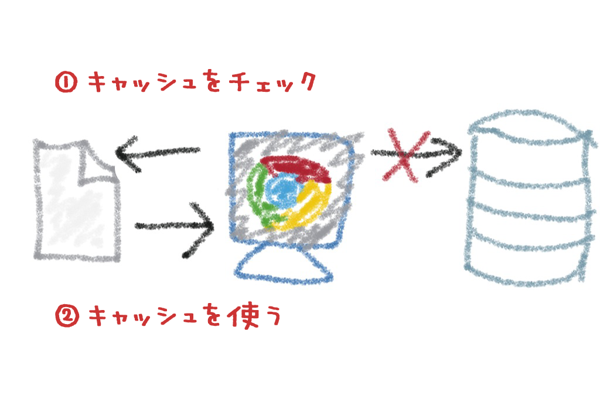
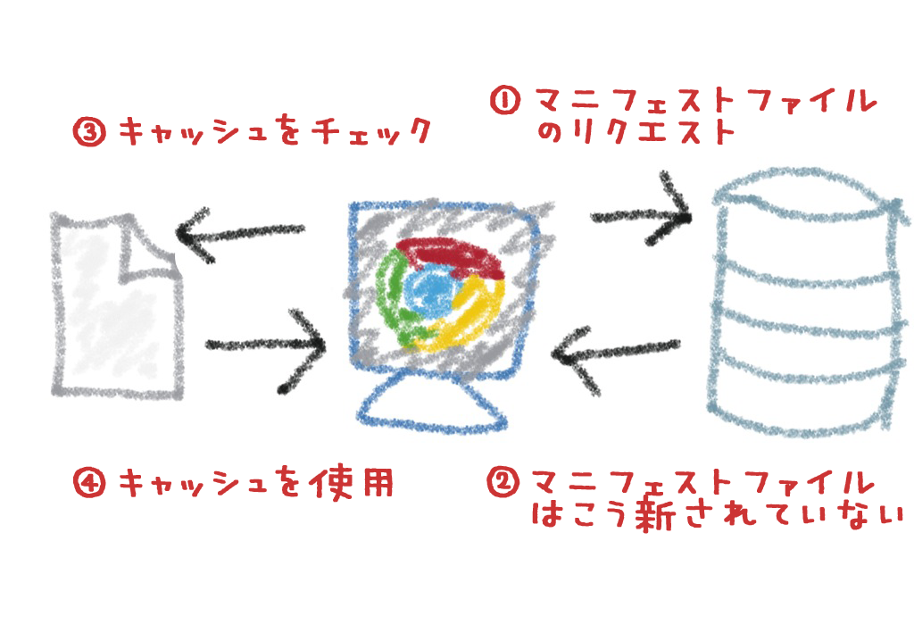

自己紹介
- 外村和仁（ほかむら かずひと）
- 株式会社ピクセルグリッド
- フロントエンドエンジニア
- Twitter: @hokaccha
HTML5をどんどん
使っていこう！
今日の内容
- HTML5の新要素
- Application Cache
- WebStorage
1. HTML5の新要素
HTML5の新要素とは？
これまでのHTMLになかった要素
article aside audio canvas details
figcaption figure footer header hgroup
mark meter nav output progress
section time videoポイント1
display: blockの指定
HTML
<header>ヘッダ</header>
<section>コンテンツ</section>
<footer>フッタ</footer>CSS
header { padding: 10px; background: #CCC; }
section { padding: 100px; background: #999; }
footer { padding: 10px; background: #CCC; }対応ブラウザ

非対応ブラウザ


対策
新要素にdisplay:blockを指定する
article, aside, figure, figcaption,
footer, header, hgroup, nav, section {
display: block;
}ポイント2
IE6〜8の対応
IE6〜8でのバグ
- IE6〜8では定義されていない要素を使うとDOMが壊れる
- DOMが壊れるとその要素にスタイルが効かなくなる

<div>Text</div>

<section>Text</section>
解決方法
JavaScriptのcreateElementであらかじめ要素を
つくることで対応可能
document.createElement('section');
html5.jsを使う
http://code.google.com/p/html5shiv/
IEのバグ対応用のスクリプト。
読み込むだけでＯＫ。
<!--[if lt IE 9]>
<script src="//html5shim.googlecode.com/svn/trunk/html5.js"></script>
<![endif]-->
ポイント3
innerHTMLの問題
innerHTMLの問題
このようなコードで追加したHTML5の新要素にIE6〜8でDOMが壊れる（スタイルが効かない）
var div = document.createElement('div');
div.innerHTML = '<section>section</section>';
document.getElementById('box').appendChild(div);$('.box').append('<section>section</section>');HTML5 innerShiv
http://jdbartlett.github.com/innershiv/
innerHTMLでIEのDOMが壊れるバグを回避する
ライブラリ
var div = document.createElement('div');
div.appendChild( innerShiv('<section>section</section>') );
document.getElementById('box').appendChild(div);$('.box').append( innerShiv('<section>section</section>') );HTML5の新要素のポイント
- デフォルトのスタイルを当てる
- IEの対応にはhtml5.jsを使う
- 必要に応じてinnerShivを使う
2. Application Cache
Application Cacheとは
- ファイルをキャッシュしてオフラインでアクセス
できるようにする仕組み - 元々Google Gearsに実装されていた仕組み
index.html
<!DOCTYPE html>
<html lang="ja" manifest="cache.appcache">
...
</html>cache.appcache
CACHE MANIFEST
/img/image.png
/js/jquery.js
/css/style.css対応ブラウザ
- Firefox 3.5+
- Google Chrome 4.0+
- Safari 4.0+
- Opera 10.60+
- iPhone(iOS) 2.1+
- Android 2.0+
※ IEは未対応
ポイント1
MIME Typeと拡張子
MIME Typeと拡張子
- 拡張子はなんでもいいが推奨されて
いるのは .appcache - MIME Typeは text/cache-manifest である
必要がある
AddType text/cache-manifest .appcacheポイント2
キャッシュコントロール
初期ロード時

次回アクセス時（オフライン）

次回アクセス時（オンライン1）

次回アクセス時（オンライン2）

やりがちな間違え
- JavaScriptで間違えがあったから1行修正
- 修正ファイルをアップ！直ったぜ！
- ApplicationCacheでキャッシュしてた場合は
いつまでたっても反映ない
ファイルを更新したい場合
コメントにバージョン情報を書いてマニフェストファイルを更新する
CACHE MANIFEST
# version 1
img/image.png
js/script.jsそれでも更新されない場合
- basic認証がかかっているとオフライン時と
同じ挙動になる - サーバー側でマニフェストファイルがキャッシュ
されていると更新されない
ポイント3
動的なサイトで使う場合
間違った使用例
- ユーザーがコンテンツと投稿するようないわゆるCGMのサイトでのケース
- 画像だけマニフェストファイルに書けばキャッシュされてウマーじゃね？
CACHE MANIFEST
/img/image1.png
/img/imaga2.pngうまくいかない理由
- manifestを指定したHTMLは暗黙のうちに
キャッシュされる - 動的なサイトではうまく機能しない
- 高速化のためのキャッシュではなく、
あくまでオフラインでの動作のための仕組み
Application Cacheのポイント
- MIME Typeを設定する
- キャッシュのコントロールに気を付ける
- 動的なWebサイトでの使用は難しい
3. WebStorage
WebStorageとは
- クライアント側にデータを保存するための仕組み
- key/valueの組み合わせでデータを保存する
- これまではCookieなどで代用していたが色々と
問題点があった
対応ブラウザ
- IE 8+
- Firefox 3.5+
- Google Chrome 5.0+
- Safari 4.0+
- Opera 10.50+
- iPhone(iOS) 3.1+
- Android 2.0+
WebStorageの例
// 値のセット
sessionStorage['foo'] = 'bar';
// 値の取得
sessionStorage['foo']; // => bar
// 値の削除
delete sessionStorage['foo'];WebStorageの例
// 値のセット
sessionStorage.setItem('foo', 'bar');
// 値の取得
sessionStorage.getItem('foo'); // => bar
// 値の削除
sessionStorage.removeItem('foo');ポイント1
データの有効範囲
Same-Originポリシー
オリジン（プロトコル、ドメイン、ポート）を
またいでデータにアクセスできない
http://www.pxgrid.com:80/| プロトコル | http |
|---|---|
| ドメイン | www.pxgrid.com |
| ポート | 80 |
同一オリジン
データを共有できる
- http://www.pxgrid.com/
- http://www.pxgrid.com/map
- http://www.pxgrid.com/foo/bar/baz
非同一オリジン
データを共有できない
- http://www.pxgrid.com/
- https://www.pxgrid.com/
- http://sub.pxgrid.com/
- http://www.pxgrid.com:8080/
- http://www.yahoo.co.jp/
localStorageとsessionStorage
localStorage
- ウィンドウ間でデータを共有できる
- ブラウザを閉じてもデータが消えない
sessionStorage
- ウィンドウごとのセッションでデータが有効
- ブラウザを閉じるとデータが消える
sessionStorageの有効範囲
 ブラウザ（タブ）を閉じて再度開く
ブラウザ（タブ）を閉じて再度開く- 別タブで新規ページページを開く
 ページをリロードする
ページをリロードする- 同一オリジン内のページに遷移する
- ▲ window.openで子ウィンドウを開く（データが複製される。データを更新しても他のウインドウには影響しない）
ポイント2
容量の制限
容量の制限
- 仕様上は容量の制限はない
- 実際はブラウザによって上限値が異なる
- localStorageは消去しないと残り続けるので
注意が必要
ブラウザ別の容量
| ブラウザ | localStorage | sessionStorage |
|---|---|---|
| IE8 | 4.75 MB | 4.75 MB |
| IE9 | 4.75 MB | 4.75 MB |
| Firefox4 | 4.98 MB | unlimited |
| Safari5 | 2.49MB | unlimited |
| Chrome12 | 2.49 MB | 2.49 MB |
| Opera11.11 | unlimited | 4.92 MB |
| iOS4.3 | 2.49 MB | 2.49 MB |
| Android2.3 | 2.49 MB | unlimited |
ポイント3
StorageEvent
StorageEventとは
- WebStorageが更新されたタイミングで発火
されるイベント - 発火のタイミング癖があるので注意が必要
setItem(), removeItem(), clear() メソッドがセッション・ストレージ領域と関連づけられている Storage オブジェクト x 上で呼び出されるとき、もしそのメソッドが何かをしたなら、Window オブジェクトの localStorage 属性の Storage オブジェクトが同じストレージ領域と関連づけられているすべての Document オブジェクトの中で、x を除いて、storage イベントが発出されなければいけません。
W3C - 『Web Storage』日本語訳 - HTML5.JP
つまりどゆこと？
- 同じストレージを共有するwindowのうち、更新が行われたwindow以外のwindowで発火する
- 更新が行われたwindowでは発火しない
WebStorageのポイント
- データの有効範囲について知っておく
- 容量の制限に気を付ける
- StorageEventの発火条件に注意
まとめ
- HTML5の新要素は少しだけIEに
気を付ければすぐ使える - WebStorageやApplication Cacheは
使いどころに注意 - 使える機能はどんどん使っていこう